Как показано на рисунке, многоугольник состоит из двух частей: его контура и его внутренней части. Его геометрия задается как серия вершин [(x0, y0), (x1, y1), … (xn, yn)], но фактический периметр включает еще один сегмент от (xn, yn) обратно к (x0, y0). В этом примере пять вершин:

Чтобы создать новый объект многоугольника на холсте C:
id = C.create_polygon(x0, y0, x1, y1, ..., option, ...)
Конструктор возвращает ID для этого объекта. Опции:
Таблица 12. Опции объекта многоугольника на холсте
activedashactivefillactiveoutlineactiveoutlinestippleactivestippleactivewidth |
Эти параметры определяют внешний вид многоугольника, когда он находится в состоянии tk.ACTIVE, то есть когда указатель мыши находится над ним. Для значений см. dash, fill, outline, outlinestipple, stipple и width. |
dash |
Используйте эту опцию, чтобы создать пунктирную границу вокруг многоугольника. См. раздел 5.13, Шаблоны пунктира. |
dashoffset |
Используйте эту опцию, чтобы начать шаблон пунктира в некоторой точке его цикла, отличной от начала. См. раздел 5.13, Шаблоны пунктира. |
disableddashdisabledfilldisabledoutlinedisabledoutlinestippledisabledstippledisabledwidth |
Эти параметры определяют внешний вид многоугольника, когда его state равен tk.DISABLED. |
fill |
Вы можете задать цвет внутренней части, установив эту опцию в цвет. По умолчанию внутренняя часть многоугольника прозрачна, и вы можете установить fill='', чтобы получить это поведение. |
joinstyle |
Эта опция контролирует внешний вид пересечений между смежными сторонами многоугольника. См. раздел 5.12, Стили концов и соединений. |
offset |
Смещение шаблона заливки внутренней части многоугольника. См. раздел 5.14, Согласование шаблонов пунктира. |
outline |
Цвет контура; по умолчанию outline='', что делает контур прозрачным. |
outlineoffset |
Смещение шаблона пунктира границы. См. раздел 5.14, Согласование шаблонов пунктира. |
outlinestipple |
Используйте эту опцию, чтобы получить пунктирную границу вокруг многоугольника. Значение опции должно быть битовым изображением; см. раздел 5.7, Битовые изображения. |
smooth |
По умолчанию контур использует прямые линии для соединения вершин; используйте smooth=0, чтобы получить это поведение. Если вы используете smooth=1, вы получаете непрерывную сплайновую кривую. Более того, если вы установите smooth=1, вы можете сделать любой сегмент прямым, дублируя координаты в каждом конце этого сегмента. |
splinesteps |
Если опция smooth равна true, каждый сплайн отображается как определенное количество прямых отрезков. Опция splinesteps указывает количество отрезков, используемых для приближения каждого участка линии; по умолчанию splinesteps=12. |
state |
По умолчанию многоугольники создаются в состоянии tk.NORMAL. Установите эту опцию в tk.HIDDEN, чтобы сделать многоугольник невидимым, или установите ее в tk.DISABLED, чтобы он не реагировал на мышь. |
stipple |
Битовое изображение, указывающее, как будет заштриховываться внутренняя часть многоугольника. По умолчанию stipple='', что означает сплошной цвет. Обычное значение: stipple='gray25'. Не влияет, если fill не был установлен в какой-либо цвет. См. раздел 5.7, Битовые изображения. |
tags |
Если это строка, то многоугольник помечен этой строкой. Используйте кортеж строк, чтобы пометить многоугольник несколькими тегами. См. раздел 8.4, Теги холста. |
width |
Ширина контура; по умолчанию 1. См. раздел 5.1, Размеры. |